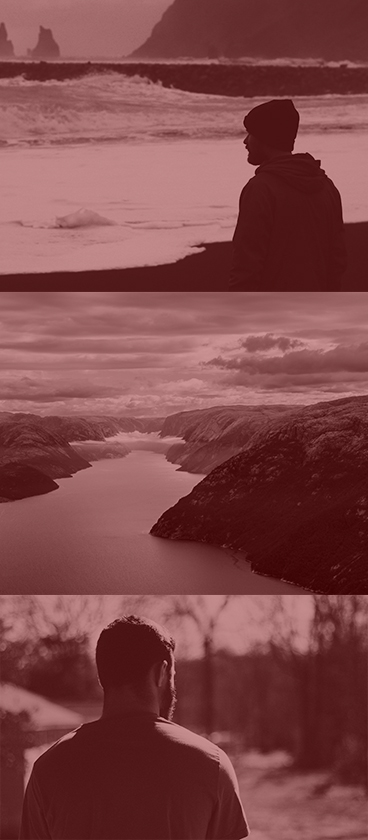

ЗДЕСЬ ЖИВЕТ КИНО.
производство отечественной кино - и теле - продукции
ФИЛЬМЫ
КОМАНИЯ
Тема проекта - корпоративная идентификация киностудии «Кадр».
Актуальность данной темы обусловлена усиливающимся с каждым годом влиянием кинофильмов на социокультурную сферу жизни. Голливудский сценарист и продюсер Блейк Снайдер сказал: «Чем богаче эмоциональная палитра вашего фильма, тем лучше будет и для вас, и для ваших зрителей». Мне кажется, это определение относится не только к определенному фильму, но и ко всему, что используется для реализации идеи и показа: афиша, музыкальное сопровождение, логотип, а также рекламная компания.
Слоган киностудии ("Здесь живет кино.") был выбран не случайно: все настолько продумано, что спонсор, продюсер, попадая на площадку, погружается в киношную атмосферу, и покидать ее без подписанного договора не желает.
В данном проекте осуществлялась разработка рекламной компании. Для цветового решения были выбраны красный, белый, серый и черный цвета. Именно они помогают раскрыть идею, концепцию киностудии "Кадр" - достаточно серые, мрачные фильмы с яркой (красной) "искрой" в сюжете, которая переворачивает сознание и не отпускает до самого конца. Графическое решение проявляется через трассированные изображения атрибутики кино и актеров, фотографии, кадры из фильмов и раппорты.
Благодаря красному цвету, фотографиям и графическому изображению атрибутики рождается стиль проекта.
